← 返回阅读库 · 原论文目录
论文讲解阅读文档 · 机器人学 · v122
Transformers are Sample Efficient World Models[2209.00588]
视频时长 00:10:33；讲解文字 5,133 字符；提取讲解画面 31 张。按视频原顺序阅读，每段文字保留时间戳。
文字来自整段视频的自动语音转写，按自然停顿分段，并与 PPT / 论文页面 / 演示画面对齐。未将讲解压缩为摘要；术语、数字和口述公式请结合画面及原论文核对。 阅读稿已校正规范部分明确术语误识别；原始逐字稿和每处修改记录另行保留。
讲解画面为源视频截图（640×360），不是可编辑 PPT 文件。全片按每秒 2 帧扫描内容变化，逐步展开页保留；连续动画保留代表画面。清晰度受源视频限制。
下载完整资料包 · 含离线 HTML、PDF、Word、全部 PPT 画面和字幕。
原论文与材料
Transformers are Sample-Efficient World Models · 下载完整 PDF（21 页）
按时间阅读
00:00:00–00:00:16 · 画面 001
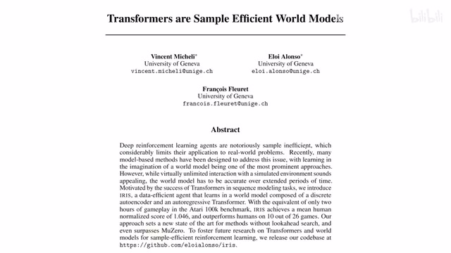
00:00:00–00:00:16 · 画面 001大家好,今天我们来快速说一篇论文Transformers are sample-efficient world models这篇论文就是把 Transformer 用起来。作为一个 model-based reinforcement learning它里面的这么一个内在的驱动。是一篇很直接的文章。我们直接来看
00:00:16–00:02:08 · 画面 002
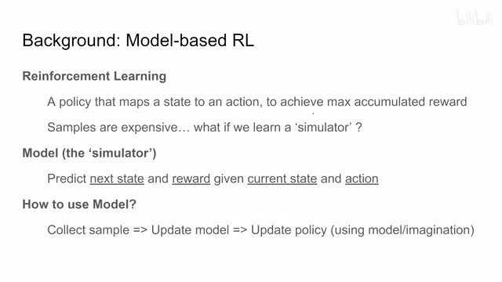
00:00:16–00:02:08 · 画面 002首先,一点简单的背景吧什么是 model-based reinforcement learning reinforcement learning 就是讲的是让我们学一个 policy它把我们的一个 state 变成一个 action。然后呢这个 policy 的目的呢是通过这一系列的这个 action 呢。让我们得到这个 reward这个 cumulated reward就是积攒下来的这个 reward。
它最大化当然实际的在操作中我们知道收集样本是非常昂贵的，特别是对于真实的机器人来说，你跑在真实的场地里面收集样本这都是很昂贵的，所以人们自然就想到我们如果有一个这么一个模拟器，我们在这个模拟器里面不断的去学习去训练去收集样本，这样子我们不就可以避免说在真实的世界里面操作这个机器了吗？对吧，那么这个模拟器在这里我们就创造这个 model。
这个 model 的作用呢，就是我们通过当前的这个 state 还有这个 action 来预测出我们下一个时刻的这个 state。还有这个 reward ，也就是说我的这个通过执行这一步骤能得到多少 reward，那当然呢你还要预测这个 trajectory 是不是结束了等等等等啊，这些信息，那这个东西呢叫 model 。那么我们究竟怎么样能把这个 model 给学出来呢？啊，这里呢最简单的一个 pipeline ，也就是本文中用的 pipeline 啊，就是我们首先用一个 policy 去收集样本，然后呢用这些收集到样本去更新我们的 model。
那更新我们的 model，我们现在 model 假如说已经可以用了，对吧，我们用在这个 model 里面用我们这个 model 我们这个 simulator 来做。我们做这个 policy learning，也就是训练出我们这个 policy network，那完事之后呢我们再重新回来，对吧，用新的 policy 去收集新的样本，然后呢去重新更新这个 model，再重新训练这个 policy 啊，这样一个循环下来啊，这个就是一个典型的这个 model based reinforcement learning 的这个流程。那当然呢在我们之前的一些视频里面也介绍了一些相关的工作，比如说像这个 simple 这个我们没讲但是。
00:02:08–00:02:10 · 画面 003
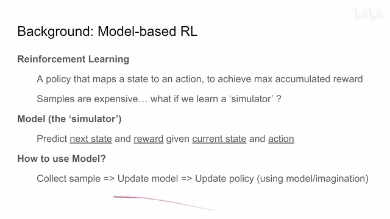
00:02:08–00:02:10 · 画面 00300:02:10–00:02:14 · 画面 004
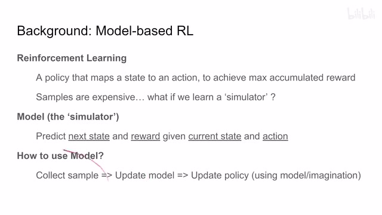
00:02:10–00:02:14 · 画面 00400:02:14–00:02:27 · 画面 005
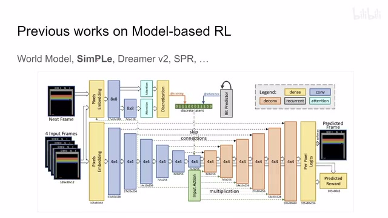
00:02:14–00:02:27 · 画面 005你看他这个图很直接的对吧，用了一个 U-Net 来做这个 future image prediction
00:02:27–00:02:39 · 画面 006
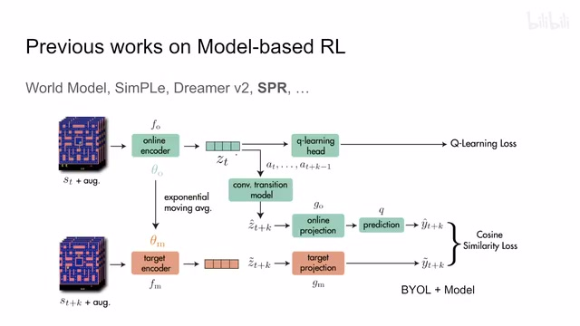
00:02:27–00:02:39 · 画面 006SPR 那这篇呢虽然不是 model based 但是呢，它用这个 modeling 作为一个这个辅助的 loss 还有加上这个 BYOL 那样的这样的一个 loss 这个 cos similarity 对吧，来做一个辅助的任务帮助我们的这个 representation 学得更好，那这个是 SPR 那然后呢这篇 Dreamer V2 这个是我们频道介绍的第一篇论文，这篇呢它就是用了一个 GRU 来做这个序列的预测。
00:02:39–00:02:41 · 画面 007
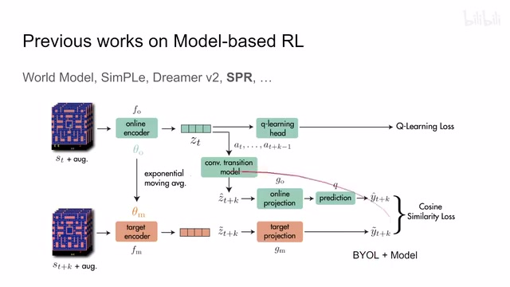
00:02:39–00:02:41 · 画面 00700:02:41–00:02:45 · 画面 008
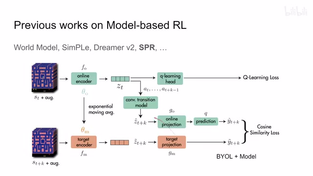
00:02:41–00:02:45 · 画面 00800:02:45–00:03:01 · 画面 009
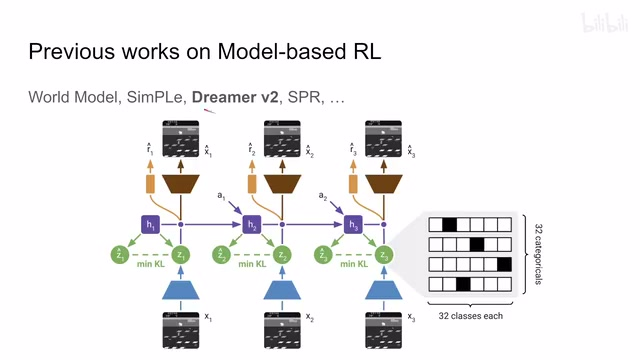
00:02:45–00:03:01 · 画面 009那当然它的这个 image representation 用的是 32 类的这种 one-hot encoding 也是很特殊的一个设计，那么下面呢我们就来看到今天的这篇工作就是 imagination with auto regression over an inner speech 这个 iris 强行凑了一个这样一个名字，那这篇的核心的思想呢，就是因为现在我们有这个 transformertransformer 它从这个 language 的角度来讲是一个很好的工具用来做这个序列的预测对吧。
00:03:01–00:03:34 · 画面 010
00:03:01–00:03:34 · 画面 010那么我们就可以抛弃 GRU 了对吧我们就把一个 Transformer 把所有我们想要预测的东西都塞进去那就好了嘛对吧那所以呢本质上来说它就是一个 Dreamer V2 把里面的这个 GRU 替换成了一个 Transformer 这篇文章呢其实就可以这么结束了那么当然了这几年我们在 Auto Encoder 上也有了进展那具体来说呢就是这个 VQVAE 就是这个离散的这个 Auto Encoder 它的这个 Representation 是这一个个离散的这个 Vector 的这个
00:03:34–00:03:35 · 画面 011
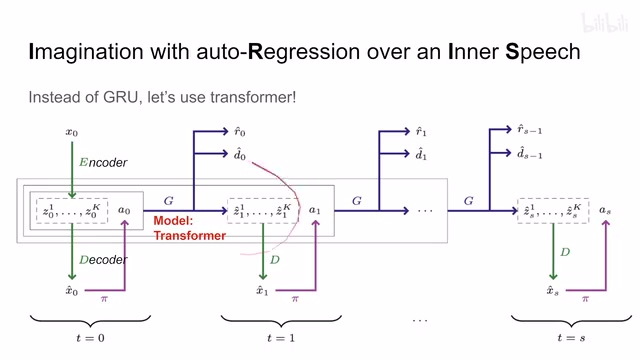
00:03:34–00:03:35 · 画面 01100:03:35–00:03:42 · 画面 012
00:03:35–00:03:42 · 画面 01200:03:42–00:04:02 · 画面 013
00:03:42–00:04:02 · 画面 013他的这个 index 这篇论文呢我们之前也讲过你如果不熟悉呢你可以搜一下这个 vqvae 啊这个东西那么有了他之后呢我们再也不用像 dreamer 里面一样自己去弄这个 one-hot encoding 那么我们直接用这种现成的这种成熟的模型啊来做就可以了那我们继续来看整个这个模型的流程啊首先你的这个输入的图像进来过我们的 visual encoder 把它呢变成了一个个的这个离散的这个 patch
00:04:02–00:04:03 · 画面 014
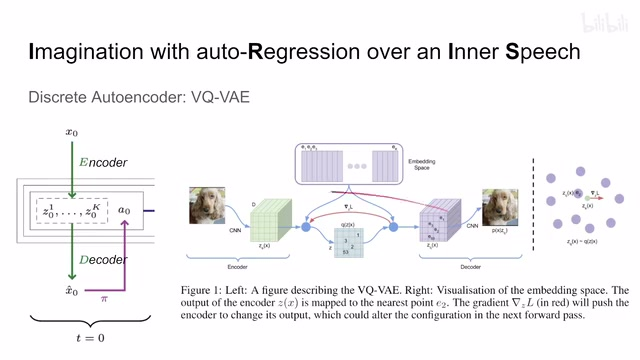
00:04:02–00:04:03 · 画面 01400:04:03–00:04:06 · 画面 015
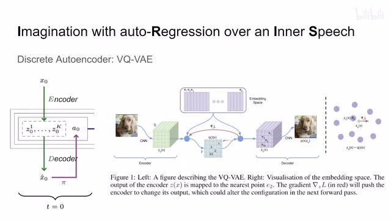
00:04:03–00:04:06 · 画面 01500:04:06–00:05:10 · 画面 016
00:04:06–00:05:10 · 画面 016就是经过我们这个 vqvae 嘛那图像变成了一个个的 patch 那每个 patch 里面呢他都用一个这个 representation 的这个 index 那么然后呢我们把它送到这个 decoder 里面那理论上我们就可以重建出我们的这个图像了嘛那么拿到这个重建之后的图像呢我们把它送到这个 policy network 里面这个是我们真正的这个 rl 要学的东西嘛然后他就给我们一个 action 那么有了这个 action 有了这个当前的这个状态的这些 representation 这一个个的这个 token 的这个 index 那么这些呢就构成一个序列嘛我们呢把它送到一个 transformer 里面那么这个 transformer 呢会给我们下一个状态的
所有 token 的这个 index 然后同时呢告诉我们这一步的这个 reward 是多少这个 trajectory 结束没有那么把这个 index 送到我们 decoder 里面就可以重建出下一帧的这个图像来然后再送到这个 policy 里面再得到一个 action 然后呢之前这么长的一个序列对吧也都拿进来啊再送到我们 transformer 里面这样逐次循环往复下去这个呢就是本文的一个流程那除了这个模型从 gru 换到这个 transformer 对吧它的流程是没有变化的
00:05:10–00:05:11 · 画面 017
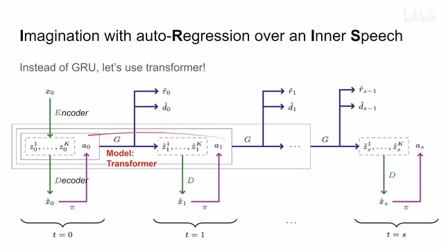
00:05:10–00:05:11 · 画面 01700:05:11–00:05:23 · 画面 018
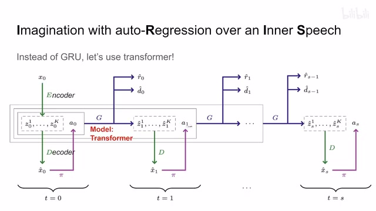
00:05:11–00:05:23 · 画面 01800:05:23–00:06:39 · 画面 019
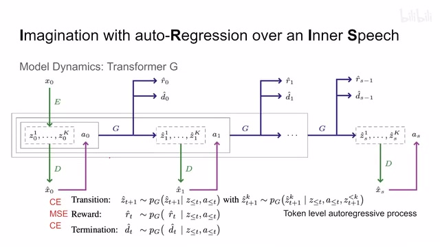
00:05:23–00:06:39 · 画面 019那么下面我们具体来看这个 transformer 它实现了一些细节首先这个 transformer 呢它是一个形如 GPT 的这么一个 transformer 那这也就意味着呢你的这个 token 他们做 attention 的时候是只能跟时序上比自己靠后的这个 token 做 attention 的也就是说它的 attention layer 里面这个 mask 它是一个反三角阵嘛那然后呢我们再看到这里这个 model 它要做这个 state transitionprediction 嘛
就是我们预测下一个状态的这个 token 那下一个状态的 token 呢因为它有很多个我们也是一个一个的去预测就是我每一个 forward pass 只预测出一个 token 来然后这个预测出来的结果加入到我们的输入再过一次 forward pass 来得到下一个 token 所以呢你可以看到我们的这个预测的过程中呢这个 t 加 1 时刻的这个 token 呢它不仅依赖于之前的这个 t 时刻的这些 state 还有 action 啊对吧这些东西那同时呢它还依赖于 t 加 1 时刻比自己靠前的这些 token 这个小于 k 的这些 token 所以呢整个模型呢是一个 auto regressive 的方法特别是对于我们这个 image 这个 representation 来说呢它是一个 token 一个 token 预测出来的那一个一个也就意味着你会经历很多个这个 forward pass
再一个呢就是 reward 和 termination 那么他们两个呢本质上都是从这一个 token 来出发的那从这一个 token 出来呢他们有不同的这个 MLP 去做我们这个 reward 还有这个这个序列是否结束的这个预测就可以了
00:06:39–00:06:40 · 画面 020
00:06:39–00:06:40 · 画面 02000:06:40–00:06:47 · 画面 021
00:06:40–00:06:47 · 画面 02100:06:47–00:06:48 · 画面 022
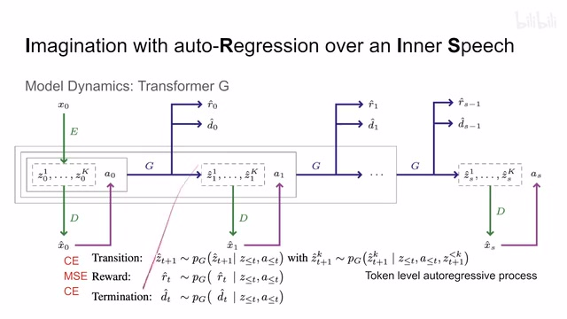
00:06:47–00:06:48 · 画面 02200:06:48–00:07:15 · 画面 023
00:06:48–00:07:15 · 画面 023那从这个 loss 来看因为我们用的是这个离散的这个 loss 我们预测的是下一个 state 里面这个 patch 的它的在这个我们词典中的 index 所以呢它算是一个多分类的问题那这里呢 transition 还有我们这个 termination 就是这个序列是否结束那这两个呢都是用的这个 cross entropy 那对于 reward 呢对吧它是一个连续的值那这里呢作者用的是这个 mse那么这个呢是这个 transformer 模型的这么一个大概的流程，那么这里呢更详细的展示了它的这个 auto regressive 的过程啊，我直接截了一段它的代码，那么一开始的输入呢是当前状态的这个 state，然后还有一个 action 作为一个 token 对吧，那么第一个 forward pass 过去啊，过去呢它产生了一个 token
00:07:15–00:07:16 · 画面 024
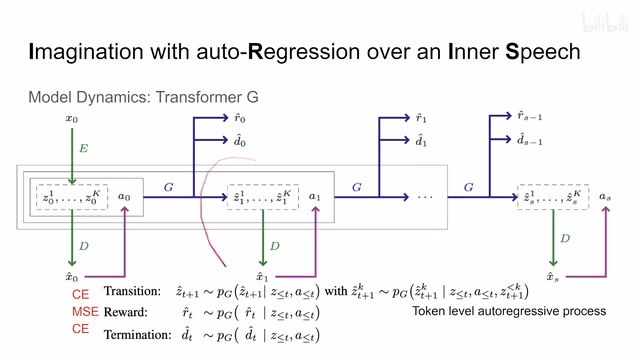
00:07:15–00:07:16 · 画面 02400:07:16–00:07:18 · 画面 025
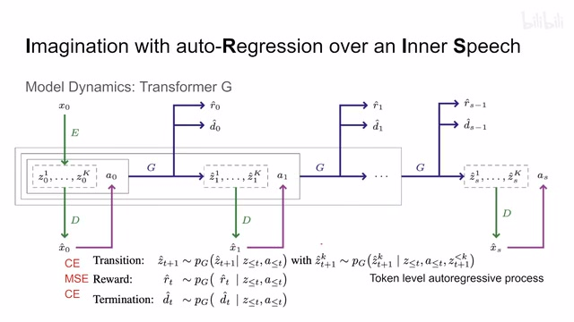
00:07:16–00:07:18 · 画面 02500:07:18–00:08:20 · 画面 026
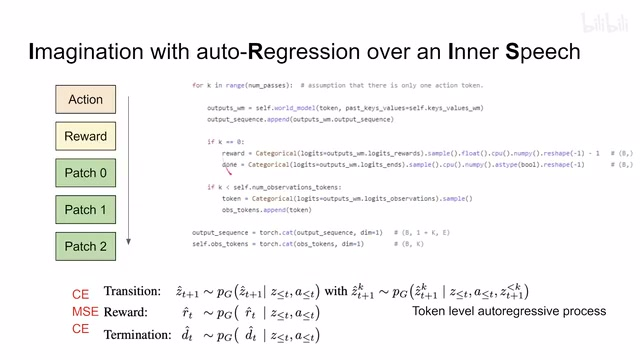
00:07:18–00:08:20 · 画面 026我们先姑且叫它 reward token，然后呢这个 token 呢它后面接着两个 MLP，一个用来做 reward 的预测，一个用来做这个 termination 就是这个序列结束的这个预测，那从这里出来，那么这两个东西呢它们是 share 同一个 token 的，它们都是基于这个 token 的 representation 来预测出来的，那么完事呢我们把 action token 这些东西再组成一个新的输入序列，那再送到我们这个模型里面，你可以看到它有这个循环嘛对吧，我们就得到了一个 patch 这个 token 对吧，它呢送到 mlp 里面做一下这个 index 啊，是一个两层 mlp 啊，那么然后这么长的一个序列再送到 transformer 里面得到这个 patch1，然后这么长的一个序列对吧，然后再送到 transformer 里面得到这个 patch2，这样子呢是一个 autoregressive 而且是这个 token level 的 autoregressive 的这么一个方法
00:08:20–00:08:21 · 画面 027
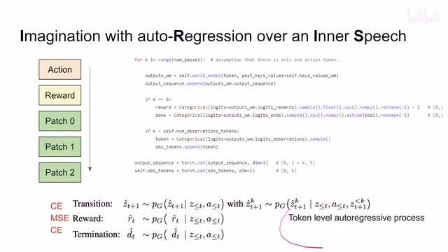
00:08:20–00:08:21 · 画面 02700:08:21–00:08:55 · 画面 028
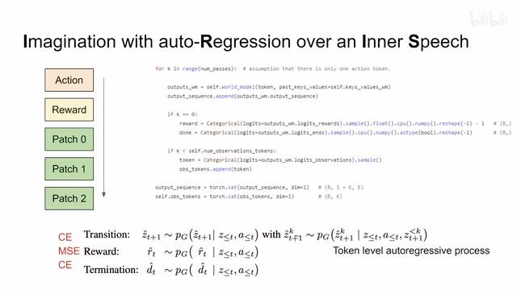
00:08:21–00:08:55 · 画面 028那么这个就是本文的主要的技术贡献了，那当然这里有一个实现细节，你可以看到它不是直接把我们的网络的预测作为模型的输出，它是根据我们的网络的预测对吧，把我们网络预测出来的这些概率把它真正的变成一个离散概率分布，然后再在这个概率分布里面抽样，那这样子就为我们的模型引入了一定的随机性，那不是不会使得我们每次都会选择可能性最高的那样一个类来去做这也是一个很有意思的这个 trick，下面我们来看到结果，这里呢作者对比的就是这个 Atari 100k 就是 26 个 Atari 的游戏，那作者的方法呢每个环境跑了 5 个这个随机种子，看到对比之前的方法 SPR 对吧，DrQ、CURL 这些我们之前都介绍过了，还有 simple model-based 的这些方法对吧，那汇报的是和人类相比的这么一个值
00:08:55–00:09:40 · 画面 029
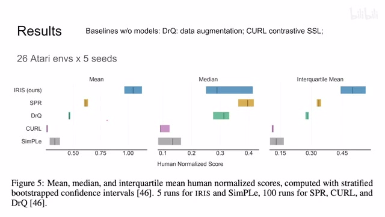
00:08:55–00:09:40 · 画面 029那可以看到本文取得了一个相对较好的结果，那当然了还是要说这个 Atari 这个环境呢它是非常 noisy 的，也就是说你需要真正的去跑很多个种子才能得到一个相对稳定的结果，这个呢也是 reinforcement learning 的通病，所以呢你可以看到它不仅汇报了这个 mean 还汇报了这个中位数，还汇报了这个 interquartile 就是从 25%到 75%这个区间内的这个 mean，那定性呢这里作者展示了一种样例
00:09:40–00:10:33 · 画面 030
00:09:40–00:10:33 · 画面 030这个作者还在论文中有其他的样例，感兴趣的朋友可以去看一下，那就是我们从这个针出发对吧，那首先这个网络学习到了对吧，我们会有敌人从这个旁边这个地方出现，那同时呢特别是在这里看到这个鼠爵攻击之后对吧，这个敌人消失了，那说明作者的这个 model 呢确实 somehow 对吧学到了一点这个游戏运行的规则，那当然呢这只是一个 cherry pick 的结果对吧，我们就看个乐但是它整个这个 reconstruction 的质量还是比较高的，所以看起来呢非常有节目效果好的，那么以上就是我对这篇论文的一个快速的整理，那么这篇论文呢在后面的附录还有大量的实验，那原文中呢还展示了更多的案例的分析，实际的详细的结果，那感兴趣的朋友呢非常推荐你到原文查看，那么感谢您的收看，再见
00:10:33–00:10:33 · 画面 031
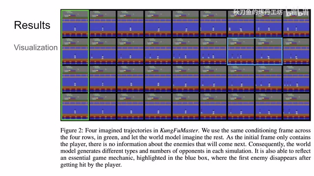
00:10:33–00:10:33 · 画面 031转写与来源说明 · 10 个自动复核提示
保留 46 个原始语音片段，10 个片段触发自动复核提示。提示仅用于定位可能的术语、重复或识别问题，不等于已确认错误。
讲解画面为源视频截图（640×360），不是可编辑 PPT 文件。全片按每秒 2 帧扫描内容变化，逐步展开页保留；连续动画保留代表画面。清晰度受源视频限制。
原视频：paper/合集_2026-10-16_机器人学/[论文简析]Transformers are Sample Efficient World Models[2209.00588].mp4
SHA-256：006513fdbfcc56bc0ec26ba2d6dff9e021ff5c6bcbfc079d56901302c8e75506
Transformers are sample-efficient world models
作为一个 model-based reinforcement learning
什么是 model-based reinforcement learning
然后呢
这个 policy 的目的呢
是通过这一系列的这个 action 呢。
让我们得到这个 reward
这个 cumulated reward
就是积攒下来的这个 reward。
它最大化
全文按视频语音与画面制作。原论文可从上方链接下载；完整资料包保留全文、原始逐字稿、字幕和校对记录。